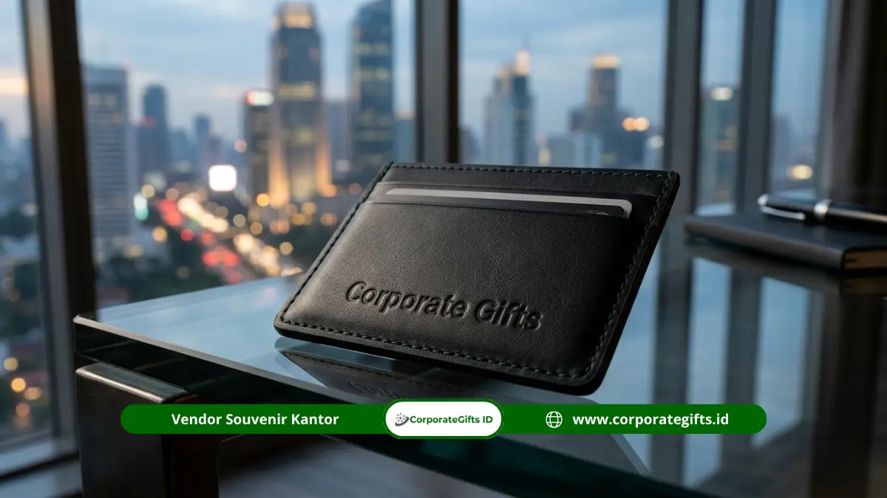

Corporate Gifts ID - Souvenir custom logo perusahaan dibuat dengan teknik seperti laser engraving, emboss, hot stamping, dan UV print. Pilih teknik sesuai bahan dan siapkan logo beresolusi tinggi agar hasilnya tajam dan elegan. Pemilihan metode personalisasi yang selaras dengan karakter media merupakan fondasi utama agar cinderamata korporat mampu menyampaikan citra prestisius kepada mitra bisnis, investor, maupun karyawan internal.
Poin Kunci Souvenir Custom Logo Eksklusif:
- Kesesuaian Material: Laser engraving sangat ideal untuk permukaan kayu dan metal, emboss untuk kulit asli maupun sintetis, UV print untuk akrilik dan kaca, serta bordir untuk tekstil.
- Kualitas File Desain: Menggunakan file format vektor berbasis kurva (AI, EPS, PDF) dengan teks ter-outline mencegah hasil cetak buram atau pecah.
- Estetika Minimalis: Prinsip satu logo proporsional dengan ruang negatif yang lega menciptakan impresi mewah dibandingkan penempatan logo yang terlalu padat.
- Tahapan Mockup & Prototyping: Validasi visual digital dan sampel fisik sebelum produksi massal menghindarkan perusahaan dari kesalahan spesifikasi warna atau tata letak.
Daftar Isi Artikel
- Teknik Utama yang Dipakai untuk Souvenir Custom Logo
- Tabel Perbandingan Karakteristik Teknik Branding
- Bagaimana Agar Logo Terlihat Elegan pada Souvenir Perusahaan?
- Standar Menyiapkan File Logo agar Hasil Cetak Maksimal
- Mengapa Mockup dan Sampel Fisik Krusial sebelum Produksi Massal?
- Bagaimana Kemasan Custom Meningkatkan Nilai Cinderamata?
- Alur Pemesanan Souvenir Custom Logo di Corporate Gifts ID
- Pertanyaan Seputar Souvenir Custom Logo (FAQ)
Teknik Utama yang Dipakai untuk Souvenir Custom Logo
Keberhasilan suatu cinderamata korporat dalam mencuri perhatian audiens sangat dipengaruhi oleh keserasian antara media barang dan teknik pencetakan logo. Masing-masing metode memiliki karakteristik visual, sentuhan taktil, dan ketahanan yang berbeda. Menggunakan teknik cetak yang tidak cocok dengan media dasar dapat membuat logo mudah terkelupas, terlihat kusam, atau bahkan merusak estetika produk itu sendiri.
1. Laser Engraving untuk Kayu dan Metal
Laser engraving bekerja dengan menembakkan sinar laser terkontrol dengan presisi mikron untuk mengikis lapisan terluar dari permukaan material. Metode ini sangat digemari untuk produk berbasis kayu jati, pinus, bambu, maupun aneka material logam seperti stainless steel SUS 304 dan aluminium anodized.
Kelebihan utama dari ukiran laser adalah sifatnya yang permanen. Logo yang tertanam tidak akan pernah luntur akibat gesekan, paparan air, maupun pemakaian jangka panjang. Efek warna yang dihasilkan timbul dari gradasi alami lapisan dalam bahan itu sendiri, menghadirkan nuansa klasik yang sangat mewah pada souvenir tumbler stainless, pulpen eksekutif, dan plakat kayu resmi.
2. Emboss dan Deboss untuk Material Kulit
Teknik penekanan termal (heat pressing) menggunakan klise plat kuningan berprofil desain khusus untuk membentuk relief logo pada permukaan bahan kulit asli (genuine leather) atau kulit sintetis premium (PU leather).
Perbedaan mendasarnya terletak pada arah tekstur: emboss menghasilkan profil logo yang timbul keluar, sedangkan deboss menekan logo masuk ke dalam serat kulit. Kedua teknik ini memberikan pengalaman taktil yang memikat saat disentuh tangan, menjadikannya standar baku untuk personalisasi agenda kerja, tempat kartu nama (card holder), pouch eksekutif, serta map dokumen kontrak penting.
3. Hot Stamping untuk Aksen Foil Mewah
Hot stamping menerapkan lapisan foil metalik, umumnya berwarna emas (gold foil), perak (silver foil), atau tembaga mengilap, menggunakan tekanan plat panas pada permukaan objek. Teknik ini menciptakan kilau elegan yang langsung membedakan souvenir korporat dari merchandise biasa. Sentuhan foil ini kerap dikombinasikan dengan teknik deboss untuk menghasilkan efek foil debossing yang spektakuler pada sampul notebook hardcover dan kemasan hardbox.
4. UV Flatbed Print untuk Permukaan Datar dan Full Color
Teknologi cetak UV (ultraviolet curing print) menyemprotkan tinta khusus langsung ke atas permukaan objek datar dan mengeringkannya secara instan menggunakan sinar ultraviolet. Keunggulan mutlak teknik ini adalah kemampuannya mereproduksi warna penuh (full color) dengan resolusi hingga 1440 DPI, termasuk gradasi warna kompleks, bayangan, dan motif grafis rumit. UV printing sangat optimal diterapkan pada media akrilik, power bank, flashdisk kartu, dan tumbler berwana cerah.
5. Sablon Presisi dan Bordir untuk Tekstil
Untuk lini merchandise berbahan kain seperti tas kanvas, tote bag ramah lingkungan, polo shirt seragam, dan jaket windbreaker, metode sablon manual presisi (screen printing) atau bordir komputer digital (computerized embroidery) adalah opsi paling tepat. Bordir komputer memberikan dimensi timbul yang tahan cuci puluhan kali pada apparel, sementara sablon plastisol atau rubber memberikan ketajaman warna solid pada tas promosi.

Personalisasi logo menggunakan hot stamping foil dan UV print menghasilkan visual identitas brand yang tajam dan eksklusif.
Tabel Perbandingan Karakteristik Teknik Branding
Guna memudahkan tim procurement dan panitia pengadaan dalam menentukan teknik personalisasi terbaik sesuai anggaran dan kebutuhan event, berikut matriks komparasi teknis yang kami susun:
| Teknik Branding | Material Cocok | Efek Visual & Taktil | Tingkat Ketahanan | Rekomendasi Produk |
|---|---|---|---|---|
| Laser Engraving | Stainless steel, kayu alami, bambu, akrilik padat | Monokrom, tekstur terukir masuk ke bahan, presisi tinggi | Permanen seumur hidup produk | Tumbler vakum, pulpen metal, kotak perhiasan kayu |
| Deboss & Emboss | Kulit asli (leather), PU leather sintetis | Relief 3D taktil, kesan mewah tanpa kilau berlebihan | Sangat tinggi, tidak luntur | Buku agenda, paspor holder, id card holder, dompet |
| Hot Stamping Foil | Hardboard, kertas fancy, kulit sintetis | Kilau reflektif metalik emas, perak, atau rose gold | Tinggi (hindari goresan benda tajam) | Kemasan hardbox, kartu sertifikat, buku tamu VIP |
| UV Flatbed Print | Akrilik bening, kaca, plastik ABS, logam berlapis | Full color kaya spektrum, gradasi tajam dan glossy | Sangat kuat, tahan air dan UV | Plakat akrilik, power bank, flashdisk card, mug keramik |
| Bordir Komputer | Kain katun, fleece, kanvas rajut, polyester | Tekstur jahitan benang rapat berdimensi tebal | Tahan puluhan kali pencucian mesin | Kemeja polo korporat, rompi lapangan, jaket seragam |
Bagaimana Agar Logo Terlihat Elegan pada Souvenir Perusahaan?
Memiliki produk souvenir dengan material premium akan sia-sia jika tata letak logo dieksekusi secara berlebihan. Studi dari ASI Global Ad Impressions Study (2019) menunjukkan bahwa sekitar 83 persen konsumen menyukai produk promosi yang berguna dan memiliki fungsi praktis. Namun, kegunaan tersebut harus diimbangi dengan tampilan visual yang pantas. Jika logo instansi dicetak terlalu besar atau memenuhi seluruh sudut barang, penerima sering kali merasa enggan memakainya di tempat umum karena terkesan seperti papan iklan berjalan.
Berikut prinsip desain estetika korporat yang perlu diterapkan:
- Satu Logo, Satu Posisi Tenang: Hindari menempatkan logo di bagian depan, samping, dan belakang sekaligus. Pilih satu titik fokus terbaik, misalnya pada area tengah bawah tumbler atau sudut kanan bawah agenda kerja.
- Kontras yang Terukur: Paduan warna logo harus senada dengan nuansa produk. Sebagai contoh, deboss tanpa warna (blind deboss) pada kulit cokelat tua menghasilkan kesan mewah yang tenang (understated luxury), sedangkan laser engraving pada permukaan matte black stainless steel menghasilkan kilau abu-abu baja yang sangat maskulin.
- Warna Korporat sebagai Aksen Halus: Bila warna brand Anda sangat mencolok (misalnya oranye terang atau merah menyala), terapkan warna tersebut sebagai aksen pendukung, seperti warna pita pembatas buku, jahitan tepi, atau tali lanyard, sementara badan produk tetap menggunakan warna netral elegan.
- Hierarki Tipografi yang Jelas: Jika harus menyertakan nama acara, tahun kegiatan, atau slogan perusahaan, pastikan logo utama tetap mendominasi secara proporsional. Gunakan ukuran font yang lebih kecil dengan tipe font sans-serif bersih untuk teks pendukung.
Standar Menyiapkan File Logo agar Hasil Cetak Maksimal
Kualitas cetakan di workshop produksi berbanding lurus dengan kualitas file digital yang diserahkan oleh pemesan. File raster beresolusi rendah (seperti file JPG atau tangkapan layar chat WhatsApp) memiliki susunan piksel terbatas yang akan pecah atau bergerigi saat diperbesar pada mesin laser cutting maupun printer UV.
Untuk memastikan hasil produksi tajam tanpa cacat, persiapkan dokumen desain sesuai standar berikut:
- Format File Vektor Resmi: Kirimkan file master dalam ekstensi .AI (Adobe Illustrator), .EPS, atau .PDF berbasis kurva. Format vektor menggunakan rumus matematis sehingga dapat diubah ke ukuran mikron hingga ukuran billboard tanpa kehilangan detail tepi sama sekali.
- Ubah Font Menjadi Kurva (Create Outlines): Konversikan semua teks dalam dokumen logo menjadi outline (Ctrl+Shift+O pada Illustrator) agar jenis font tidak berubah (missing font) saat dibuka pada komputer sistem mesin cetak.
- Sertakan Versi Monokrom (Satu Warna): Khusus untuk teknik ukir laser engraving dan emboss, siapkan versi logo hitam-putih solid (solid black and white) tanpa gradasi, di mana area hitam melambangkan bagian yang terkena tembakan laser atau plat panas.
- Buku Panduan Brand (Brand Guideline): Lampirkan kode warna resmi perusahaan dalam format Pantone Matching System (PMS) atau CMYK. Hal ini penting untuk mengunci standar warna saat proses UV print agar tidak terjadi pergeseran warna visual.
Mengapa Mockup dan Sampel Fisik Krusial sebelum Produksi Massal?
Dalam pengadaan cinderamata korporat skala menengah hingga besar (ratusan hingga ribuan unit), tahap validasi sebelum produksi massal (mass production) adalah kunci mitigasi risiko operasional. Kesalahan kecil pada ukuran logo, penulisan nama jabatan, atau salah penempatan posisi dapat menimbulkan kerugian finansial yang signifikan jika baru disadari setelah seluruh barang selesai dicetak.
Di CorporateGifts.ID, kami menerapkan dua lapis verifikasi mutu:
- Mockup Visual Digital 3D: Tim perancang grafis kami menyusun visualisasi digital proporsional yang memperlihatkan letak logo, dimensi ukuran cetak aktual dalam milimeter, serta simulasi warna pada produk. Dokumen ini dilengkapi tanda tangan persetujuan resmi (approval sheet).
- Sampel Fisik Pra-Produksi (Proofing): Untuk pengadaan paket gift set eksekutif atau pesanan dalam volume tinggi, kami dapat memproduksi 1 unit sampel fisik nyata. Anda dapat memegang langsung materialnya, menguji fungsi mekanis barang, memeriksa kilau foil, dan memastikan warna cetak sudah 100% sempurna sebelum lini pabrikasi massal berjalan.
Bagaimana Kemasan Custom Meningkatkan Nilai Cinderamata?
Kemasan luar (packaging) bukan sekadar pembungkus pelindung fisik dari benturan selama proses ekspedisi pengiriman logistik. Kemasan adalah elemen pertama yang dilihat dan disentuh oleh penerima hadiah saat menerima souvenir.
Penggunaan kemasan bespoke rigid hardbox berlapis kertas fancy bertekstur, dilengkapi busa eva cut-out (die-cut foam insert) yang dipotong presisi mengikuti lekuk tubuh produk, mampu menaikkan nilai persepsi barang (perceived value) hingga beberapa kali lipat. Memberikan souvenir sederhana seperti tumbler dan buku agenda dalam sebuah hardbox berpita rapi dengan kartu ucapan personal (greeting card) bertandatangan jajaran direksi akan memberikan sensasi unboxing experience yang luar biasa berkesan bagi mitra korporat Anda.
Alur Pemesanan Souvenir Custom Logo di Corporate Gifts ID
Kami menghadirkan prosedur pemesanan B2B yang terstruktur, transparan, dan terikat komitmen waktu ketat demi menjamin ketepatan waktu pengiriman sebelum hari pelaksanaan acara Anda:
- Konsultasi Kebutuhan & Anggaran: Hubungi tim konsultan kami dan sampaikan jenis acara, target penerima, estimasi jumlah kuantitas, alokasi anggaran, serta batas tenggat waktu pengiriman.
- Kurasi Produk & Penawaran Resmi: Kami menyusun rekomendasi katalog produk terbaik beserta estimasi Surat Penawaran Harga (SPH) resmi lengkap dengan rincian biaya transparan dan spesifikasi material.
- Pengiriman File Logo & Persetujuan Mockup: Kirimkan file logo perusahaan Anda. Tim kami akan menyiapkan mockup visual 2D/3D gratis untuk direviu dan disetujui secara tertulis.
- Pencetakan Sampel & Produksi Massal: Setelah pembayaran uang muka (DP) dan sampel diverifikasi, proses produksi massal dijalankan dengan pengawasan kendali mutu (Quality Control) ketat di workshop kami.
- Inspeksi Akhir & Pengiriman Aman: Setiap barang diinspeksi kerapian dan kelengkapannya, dikemas rapi dalam kardus master terlindungi bubble wrap, lalu dikirim tepat waktu ke alamat kantor Anda di seluruh Indonesia.
Kesimpulan
Souvenir custom logo perusahaan tampil eksklusif ketika teknik branding disesuaikan secara tepat dengan karakter bahan, file logo disiapkan dalam format vektor berkualitas tinggi, serta desain dikomposisikan secara proporsional dan tidak berlebihan. Didukung mockup akurat dan kemasan hardbox yang mewah, cinderamata korporat Anda akan menjadi representasi kehormatan institusi yang membanggakan.
Pertanyaan Seputar Souvenir Custom Logo (FAQ)

Ditulis oleh: Sholikhatun Nikmah
Creative Product Designer & Bespoke Packaging ConsultantSpesialis desain produk kreatif dan kemasan premium korporat di CorporateGifts.ID dengan pengalaman kurasi lebih dari 8 tahun dalam membantu puluhan BUMN dan instansi swasta nasional menciptakan merchandise berstandar tinggi.
Lihat Profil Lengkap & Panduan Lainnya